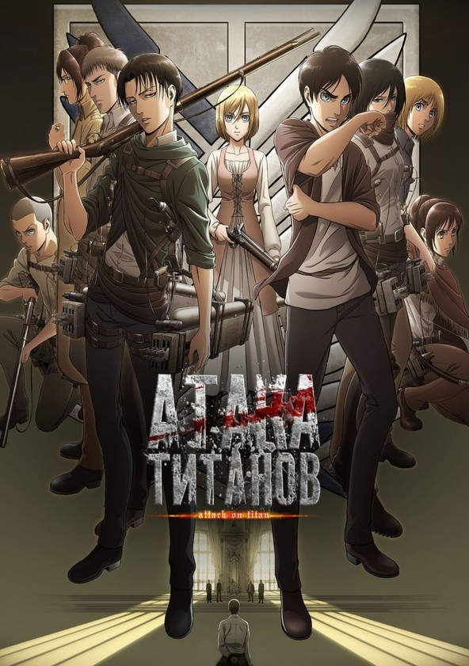
Атака титанов
Рейтинг: 8.5/10
«Атака на титанов», также возможен вариант «Атака титанов», — японская постапокалиптическая манга, написанная и иллюстрированная Исаяма Хадзимой. Выпускалась в ежемесячном журнале Bessatsu Shonen Magazine японского издательства «Коданся» с октября 2009 года по апрель 2021 года.
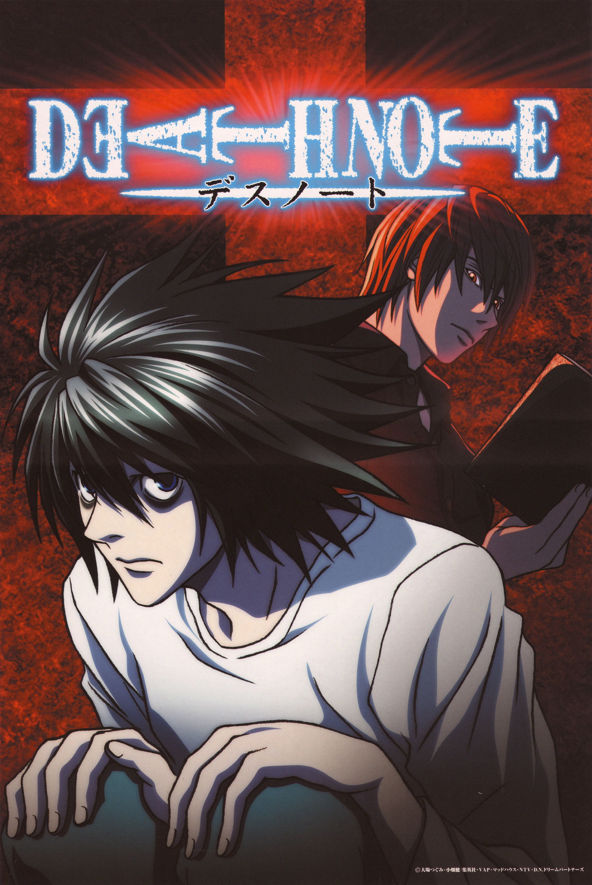
Тетрадь смерти
Рейтинг: 8.6/10
«Тетрадь смерти» — манга автора Цугуми Обы, проиллюстрированная Такэси Обатой, выпускавшаяся в журнале Weekly Shonen Jump с 1 декабря 2003 года. Согласно опросу, проведённому в 2007 году министерством культуры Японии, занимает 10-е место среди лучшей манги всех времён.
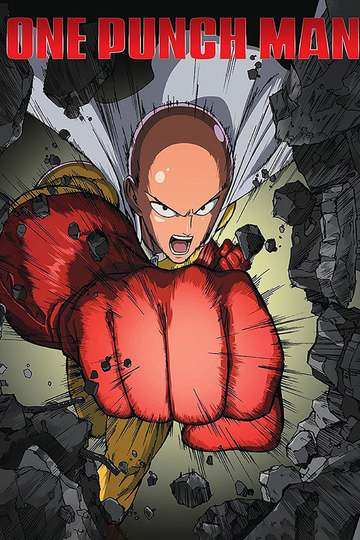
Onepunchman
Рейтинг: 8.4/10
One Punch-Man — японский веб-комикс, созданный мангакой под псевдонимом ONE, который публикуется в свободном доступе в интернете с 2009 года. В 2012 году был начат выпуск работы в формате цифровой манги с иллюстрациями Юсукэ Мураты под руководством ONE.
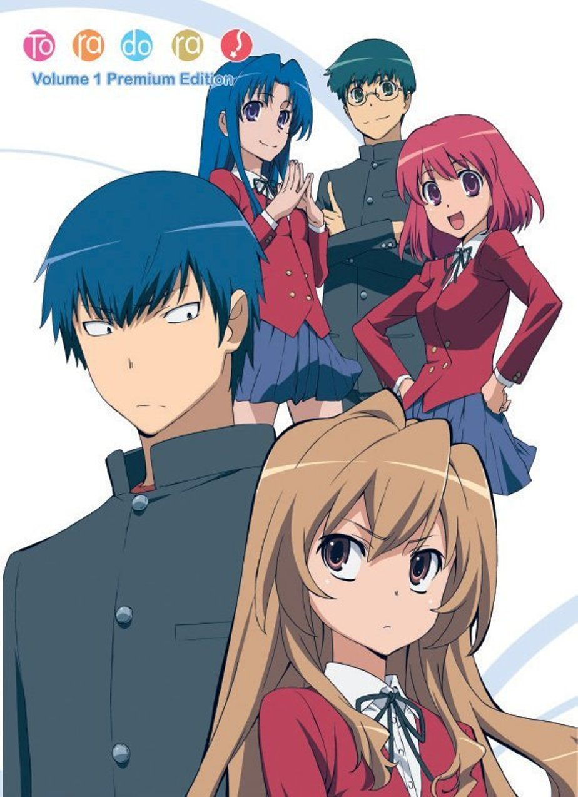
Тородора
Рейтинг: 8.4/10
Внешность бывает обманчива, об этом не понаслышке знает Рюдзи - старшеклассник, которого из-за его грозного вида другие ученики обходят стороной. Он быстро становится школьной знаменитостью, жизнь вроде бы налаживается, однако его мечту о романтической юности разрушает бунтарка Тайга - другая школьная знаменитость и единственный человек, способный дерзить Рюдзи.
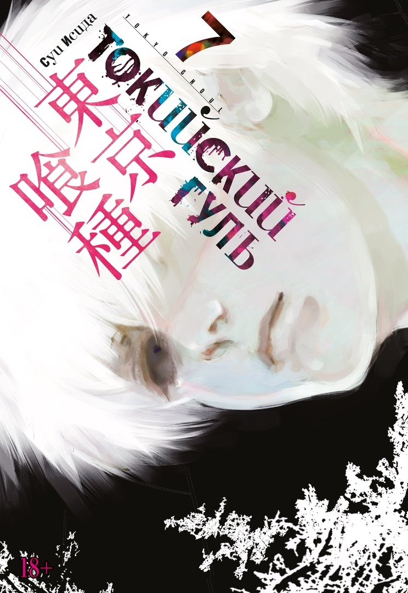
Токийский гуль
Рейтинг: 7.2/10
«Токийский гуль» — манга в жанре тёмного фэнтези авторства Суи Исиды, выпускалась в период с сентября 2011 года по сентябрь 2014 года в журнале Weekly Young Jump издательства Shueisha, cобранные главы были изданы в виде 14 томов.
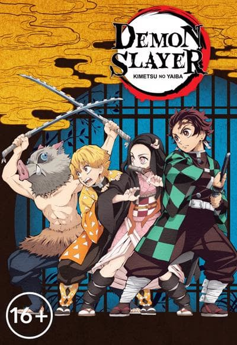
Истребители демонов
Рейтинг: 8.1/10
Kimetsu no Yaiba — манга авторства Коёхару Готогэ, выпускающаяся в журнале Weekly Shonen Jump издательства Shueisha с 15 февраля 2016 года. По состоянию на ноябрь 2018 года общий выпуск серии превысил 3 миллиона экземпляров.
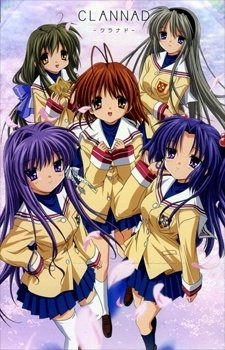
Кланнад
Рейтинг: 8.8/10
Томоя Окадзаки, ученик выпускного класса, разочаровался в жизни. После трагической гибели матери, отец его спился, а сам он обрел славу хулигана. Вместо подготовки к выпускным экзаменам, Томоя слоняется по школе, пропуская уроки и делает, что придет в голову.
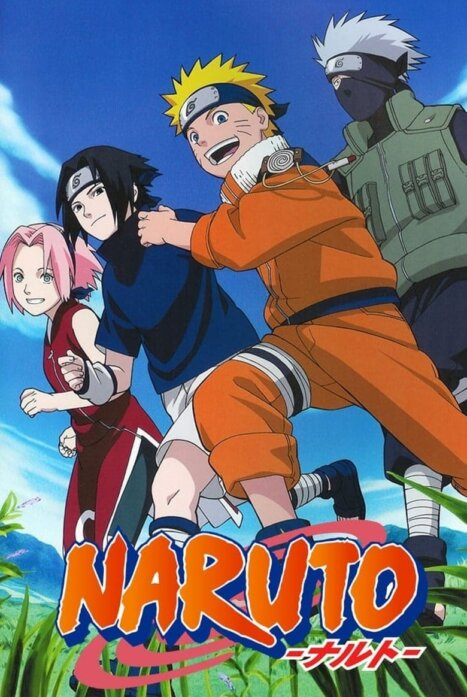
Наруто
Рейтинг: 7.5/10
«Наруто» — сёнэн-манга Масаси Кисимото, рассказывающая о жизни шумного и непоседливого ниндзя-подростка Наруто Удзумаки, мечтающего достичь всеобщего признания и стать Хокагэ — главой своего селения и сильнейшим ниндзя.
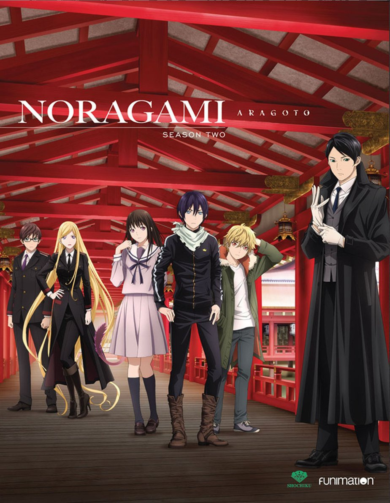
Бездомный бог
Рейтинг: 8.0/10
«Бездомный бог» — фэнтези-манга дуэта художниц, работающих под псевдонимом Адатитока. Псевдоним образован от их имён: Адати — художница по персонажам и Токасики — художница по фонам. Первая глава манги была опубликована в январе 2011 года издательством Kodansha в январском выпуске журнала Monthly Shonen Magazine.
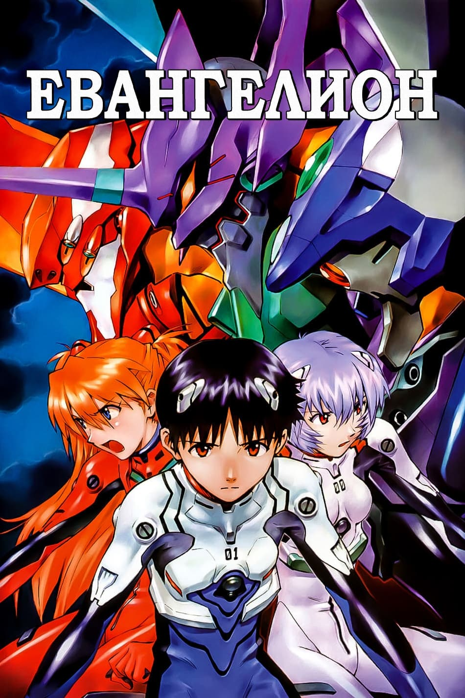
Евангелион
Рейтинг: 8.1/10
«Евангелион», или сокращённо «Ева», — аниме-сериал в жанре «меха», снятый режиссёром Хидэаки Анно на студии Gainax и выходивший с 4 октября 1995 по 27 марта 1996 года. Сценарий написан шестью сценаристами, однако в создании сюжета четвёртой серии Анно участия не принимал.
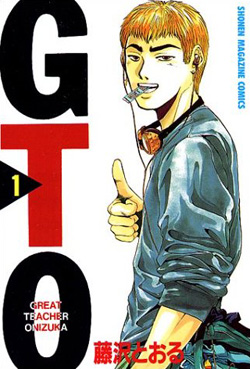
Крутой учитель Онидзука
Рейтинг: 8.7/10
«Крутой учитель Онидзука» — манга и аниме-сериал, повествующие о том, как бывший член уличной банды «Онибаку», байкер Онидзука, решил стать самым крутым учителем.
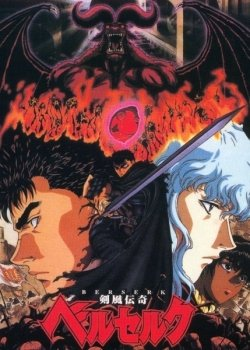
Берсерк
Рейтинг: 9.2/10
«Берсерк» — фэнтези-манга, автором которой является Кэнтаро Миура. Первый том был издан в 1989 году, однако манга продолжала выходить до 2021 года. Согласно опросу, проведённому в 2007 году министерством культуры Японии, занимает 25-е место среди лучшей манги всех времён.
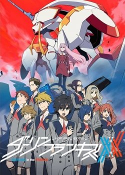